|
The Space Conquest |
This is a quite special page for me, for the reason that this is the first topic that I started collecting. I begun with the Space Conquest on Stamps by the age of 16, and have collected the stamps worldwide belonging to this topic for about ten years. What could be more fascinating indeed for a young man, interested in science and technology, as the struggle of mankind to spread into the totally unknown and unexplored space around the Earth, and to make its first step on the Moon. I read with avidity information pertaining to the spaceships and the first conquerors of the outer space, and even envied them. BTW, even today, after four decades, I would spend the most I have for a stroll in space, but, unfortunately, this most is largely insufficient for such an adventure. :-).
My preferred stamps and letters were those issued by or coming from the USSR and the USA postal administrations. Unfortunately, in my view, the US PA had issued at that time very few stamps dedicated to its spaceships and its heroes, when compared to the effort of this country in the realm of the mentioned topic.
 |
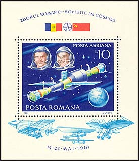 |
|
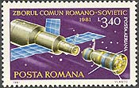 |
We'll start with the so called Romanian - Russian space cooperation, a flight of the first (and last) Romanian cosmonaut on a Soviet spaceship. His name is Dumitru Dorin Prunariu, born Sept. 1953 in Brasov, a 1st Class pilot for the Romanian Air Force. The name of the Russian commandant is Leonid Popov. The stamps were issued on May 14, 1981, and they show the Soyuz 40 shuttle, the Salyut 6 spacecraft and the cosmonauts. The sheet was issued on June 30, 1981. "Zborul comun Romano-Sovietic in cosmos" means "The common Rumanian-Soviet Fly in Space". The print runs were of 300, 000; 250,000; and 190,000 pieces respectively. The set was designed by Vlasto. For find out more about the flight and its commemoration on stamps please click here.
|
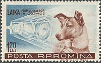 |
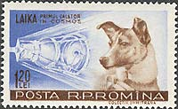 |
The set above was issued on December 10, 1957. This was the second Romanian space stamp set (the first, issued in 1957 and not shown, displays the renown Sputnik I and the Sputnik II). It shows the dog Laica (the barker), the" first space traveler". Unfortunately, Laica never returned from this trip (that shortened her way to heavens), and for this reason she can be considered also as the first, innocent victim of the space conquest. The set was designed by the "colectiv Dumitrana", and the print run was of 2,000,000 sets. Even if the issued quantity was so important, the value of 1.20 Lei was heavily used, so that the set is not so largely available, especially mint.
|
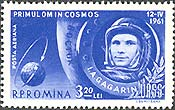 |
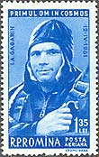 |
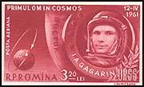 |
The first man in space was, of course, the first sensation of the space conquest. Please see above images of the Maj. Yuri Gagarin, the first hero of the space. Its short flight of April 12, 1961 stays in the history of cosmonautics, and had an enormous impact worldwide. A few years later Gagarin visited Romania and I was among many who greeted him on the streets of Bucharest. He died shortly after that, apparently in an experimental flight of a new plane. The above set appeared on Apr. 19, 1961. It was designed by Ion Dumitrana. The print runs were of 1,500,000 for the blue stamps and of 500,000 for the imperforated, red stamp.
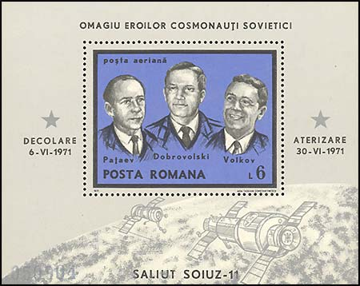
For two reasons the above sheet is a very special one to me. It was for the first time that the Russians admitted that they have lost cosmonauts in a mission.
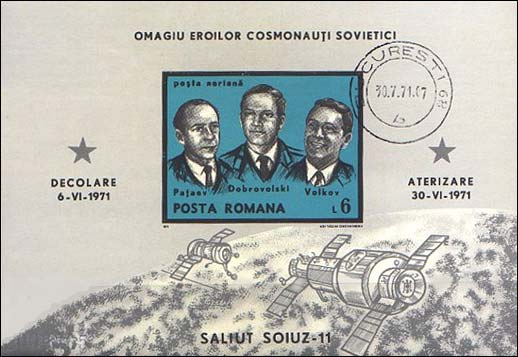
But this was also the first sheet that was issued also as imperforated (and bigger), and the imperforated sheet wasn't available at all to Romanian stamp collectors. It was sold only for hard currency, and only abroad (because at that time the Romanian citizen, as quite all citizen of Communist countries, were forbidden to possess foreign currency). After I have learned this bad news, I decided to give up the space on stamp collecting, for ever. The sheet was issued on July 26, 1971. The print run of the sheet was of 100,000 pieces (12,500 for the imperforated sheet, MM 600 in my Michel 1999!). The sheet was designed by Aida Tasgian Constantinescu.
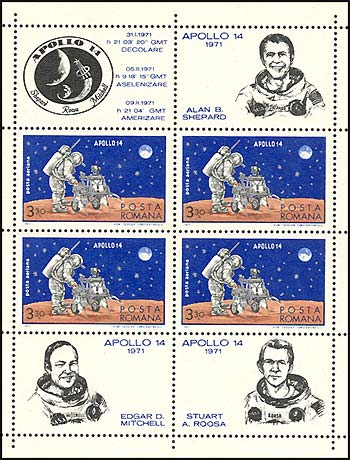
Many Romanian sheets dedicated to space conquest appeared in the format presented above. This sheet appeared on March 20, 1971, and was dedicated to the flight of the US Apollo 14 spaceship, to the moon landing, and to the astronauts A. B. Sheppard, E. D. Mitchell and S. A. Roosa. The print run was of 200,000 sheets, and the designer the same Aida Tasgian Constantinescu. As a single design the sheet is interesting, but it was repeated too many times over the years.
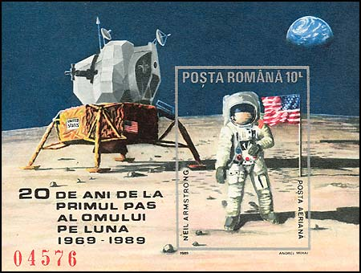
Finally, a nice sheet appeared on October 25, 1989, commemorating 20 years since the first moon landing. It was designed by a representative of a newer generation of artists, Andrei Mihai. The print run was of only 24,900 sheets.
| Published:
07/20/2002. Revised:
01/02/03. Copyright © 2002 - 2003 by Victor Manta, Switzerland. All rights reserved worldwide. |